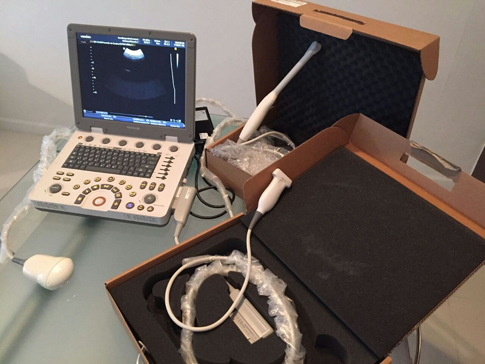
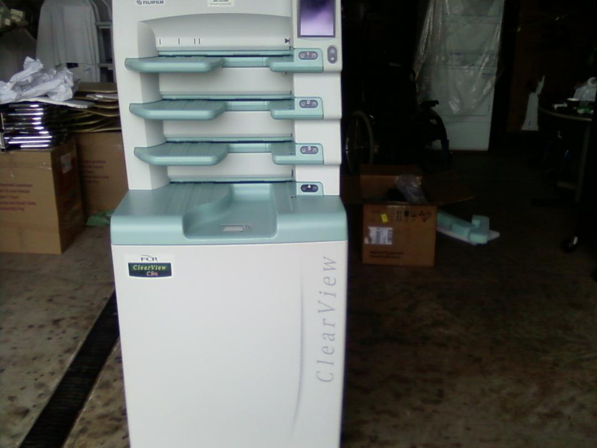

Algunos ejemplos de equipos...
Sí no ve un equipo como el que busca, envienos los datos de lo que necesita y localizamos el que requiere. Contamos con una amplia red de equipos, servicios y outsourcing.

Ultrasonido Samsung U6, 3D/4D
Ultrasonido Samsung Medison MySono U6, 3D/4D, Doppler Color, Dicom activado, con transductores: Volumétrico, Lineal, Endocavitario. Portátil

Mastógrafo General Electric Instrumentarium-Diamond
High Frequency: Single Phase,230VAC. 50/60Hz max 20A, instantaneous 30A, standard outlet 230/15A.
Compression Cones, Molybdemun Rhodium and Aluminium filters

CR FujiFilm FCR5000 Software Mastografía
Charolas múltiples, Dicom, Software para Mastografía, equipado con Workstation, Monitor BARCO, Cassettes, Servicios de FujiFilm.
Regresar a Pagina Inicio.GlobalMedSystems.com Inicio.